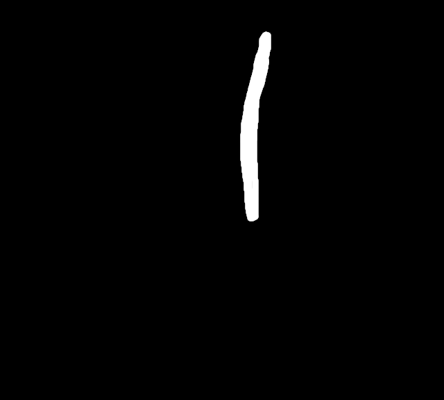
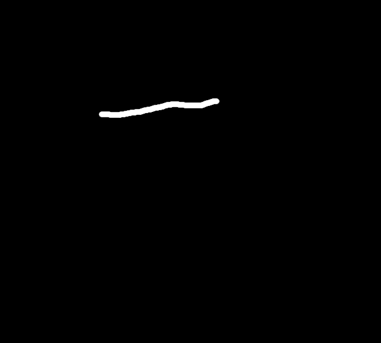
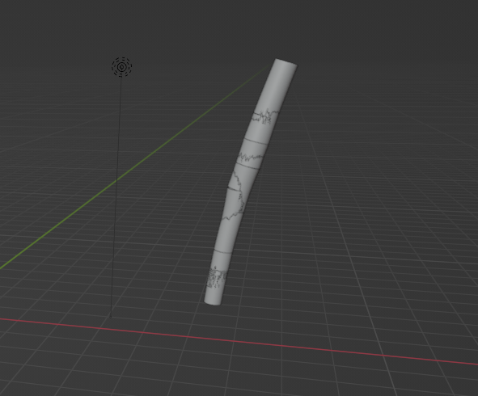
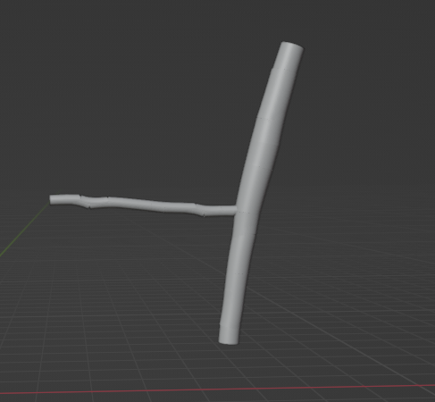

I was given the task of working with RGB D data to model trees in 3D.
The test_connectivity.py code takes in masks and depth images of trees, builds 3D cylinders along a bezier curve following a branch, and determines which side branches are connected to which main or "leader" branches.
Based on these masks and some depth data:
 A 3D curve looks like:
A generated tree from the current available data looks like:
For more information, please visit the repository.